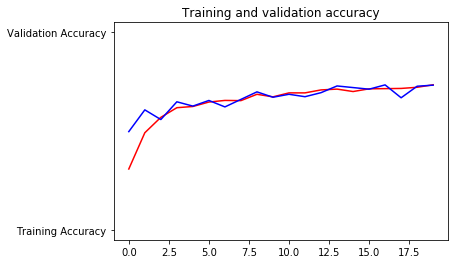
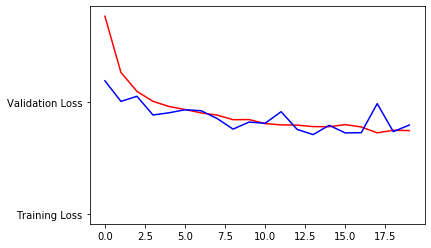

Python 3.7.3 (default, Apr 24 2019, 15:29:51) [MSC v.1915 64 bit (AMD64)]
Type "copyright", "credits" or "license" for more information.
IPython 7.6.1 -- An enhanced Interactive Python.
Restarting kernel...
In [1]: runfile('C:/Users/Habibullah/Desktop/Leaves Recognition/flower_recognition.py', wdir='C:/Users/Habibullah/Desktop/Leaves Recognition')
Found 2934 images belonging to 5 classes.
Found 736 images belonging to 5 classes.
WARNING:tensorflow:From C:\Users\Habibullah\Anaconda3\lib\site-packages\tensorflow\python\ops\init_ops.py:1251: calling VarianceScaling.__init__ (from tensorflow.python.ops.init_ops) with dtype is deprecated and will be removed in a future version.
Instructions for updating:
Call initializer instance with the dtype argument instead of passing it to the constructor
Model: "sequential"
_________________________________________________________________
Layer (type) Output Shape Param #
=================================================================
conv2d (Conv2D) (None, 298, 298, 64) 1792
_________________________________________________________________
max_pooling2d (MaxPooling2D) (None, 149, 149, 64) 0
_________________________________________________________________
conv2d_1 (Conv2D) (None, 147, 147, 64) 36928
_________________________________________________________________
max_pooling2d_1 (MaxPooling2 (None, 73, 73, 64) 0
_________________________________________________________________
conv2d_2 (Conv2D) (None, 71, 71, 128) 73856
_________________________________________________________________
max_pooling2d_2 (MaxPooling2 (None, 35, 35, 128) 0
_________________________________________________________________
conv2d_3 (Conv2D) (None, 33, 33, 128) 147584
_________________________________________________________________
max_pooling2d_3 (MaxPooling2 (None, 16, 16, 128) 0
_________________________________________________________________
flatten (Flatten) (None, 32768) 0
_________________________________________________________________
dropout (Dropout) (None, 32768) 0
_________________________________________________________________
dense (Dense) (None, 1024) 33555456
_________________________________________________________________
dense_1 (Dense) (None, 5) 5125
=================================================================
Total params: 33,820,741
Trainable params: 33,820,741
Non-trainable params: 0
_________________________________________________________________
Epoch 1/20
92/92 [==============================] - 529s 6s/step - loss: 1.7630 - acc: 0.3081 - val_loss: 1.1878 - val_acc: 0.4973
Epoch 2/20
92/92 [==============================] - 684s 7s/step - loss: 1.2623 - acc: 0.4915 - val_loss: 1.0039 - val_acc: 0.6073
Epoch 3/20
92/92 [==============================] - 731s 8s/step - loss: 1.0928 - acc: 0.5695 - val_loss: 1.0494 - val_acc: 0.5584
Epoch 4/20
92/92 [==============================] - 2934s 32s/step - loss: 1.0030 - acc: 0.6183 - val_loss: 0.8826 - val_acc: 0.6481
Epoch 5/20
92/92 [==============================] - 528s 6s/step - loss: 0.9580 - acc: 0.6244 - val_loss: 0.9022 - val_acc: 0.6264
Epoch 6/20
92/92 [==============================] - 490s 5s/step - loss: 0.9311 - acc: 0.6469 - val_loss: 0.9294 - val_acc: 0.6549
Epoch 7/20
92/92 [==============================] - 473s 5s/step - loss: 0.9026 - acc: 0.6551 - val_loss: 0.9209 - val_acc: 0.6223
Epoch 8/20
92/92 [==============================] - 530s 6s/step - loss: 0.8828 - acc: 0.6541 - val_loss: 0.8515 - val_acc: 0.6603
Epoch 9/20
92/92 [==============================] - 519s 6s/step - loss: 0.8402 - acc: 0.6861 - val_loss: 0.7565 - val_acc: 0.6984
Epoch 10/20
92/92 [==============================] - 478s 5s/step - loss: 0.8428 - acc: 0.6731 - val_loss: 0.8196 - val_acc: 0.6712
Epoch 11/20
92/92 [==============================] - 474s 5s/step - loss: 0.8047 - acc: 0.6933 - val_loss: 0.8087 - val_acc: 0.6861
Epoch 12/20
92/92 [==============================] - 525s 6s/step - loss: 0.7944 - acc: 0.6933 - val_loss: 0.9119 - val_acc: 0.6739
Epoch 13/20
92/92 [==============================] - 752s 8s/step - loss: 0.7914 - acc: 0.7082 - val_loss: 0.7539 - val_acc: 0.6943
Epoch 14/20
92/92 [==============================] - 724s 8s/step - loss: 0.7779 - acc: 0.7123 - val_loss: 0.7077 - val_acc: 0.7283
Epoch 15/20
92/92 [==============================] - 732s 8s/step - loss: 0.7773 - acc: 0.7001 - val_loss: 0.7906 - val_acc: 0.7201
Epoch 16/20
92/92 [==============================] - 705s 8s/step - loss: 0.7957 - acc: 0.7137 - val_loss: 0.7228 - val_acc: 0.7120
Epoch 17/20
92/92 [==============================] - 733s 8s/step - loss: 0.7755 - acc: 0.7147 - val_loss: 0.7246 - val_acc: 0.7337
Epoch 18/20
92/92 [==============================] - 709s 8s/step - loss: 0.7227 - acc: 0.7157 - val_loss: 0.9839 - val_acc: 0.6685
Epoch 19/20
92/92 [==============================] - 748s 8s/step - loss: 0.7455 - acc: 0.7215 - val_loss: 0.7341 - val_acc: 0.7269
Epoch 20/20
92/92 [==============================] - 716s 8s/step - loss: 0.7421 - acc: 0.7342 - val_loss: 0.7927 - val_acc: 0.7323
WARNING:tensorflow:From C:/Users/Habibullah/Desktop/Leaves Recognition/flower_recognition.py:149: The name tf.lite.TocoConverter is deprecated. Please use tf.compat.v1.lite.TocoConverter instead.
WARNING:tensorflow:From C:/Users/Habibullah/Desktop/Leaves Recognition/flower_recognition.py:149: TocoConverter.from_keras_model_file (from tensorflow.lite.python.lite) is deprecated and will be removed in a future version.
Instructions for updating:
Use `lite.TFLiteConverter.from_keras_model_file` instead.
WARNING:tensorflow:From C:\Users\Habibullah\Anaconda3\lib\site-packages\tensorflow\python\ops\init_ops.py:97: calling GlorotUniform.__init__ (from tensorflow.python.ops.init_ops) with dtype is deprecated and will be removed in a future version.
Instructions for updating:
Call initializer instance with the dtype argument instead of passing it to the constructor
WARNING:tensorflow:From C:\Users\Habibullah\Anaconda3\lib\site-packages\tensorflow\python\ops\init_ops.py:97: calling Zeros.__init__ (from tensorflow.python.ops.init_ops) with dtype is deprecated and will be removed in a future version.
Instructions for updating:
Call initializer instance with the dtype argument instead of passing it to the constructor
WARNING:tensorflow:From C:\Users\Habibullah\Anaconda3\lib\site-packages\tensorflow\lite\python\util.py:238: convert_variables_to_constants (from tensorflow.python.framework.graph_util_impl) is deprecated and will be removed in a future version.
Instructions for updating:
Use `tf.compat.v1.graph_util.convert_variables_to_constants`
WARNING:tensorflow:From C:\Users\Habibullah\Anaconda3\lib\site-packages\tensorflow\python\framework\graph_util_impl.py:270: extract_sub_graph (from tensorflow.python.framework.graph_util_impl) is deprecated and will be removed in a future version.
Instructions for updating:
Use `tf.compat.v1.graph_util.extract_sub_graph`
INFO:tensorflow:Froze 12 variables.
INFO:tensorflow:Converted 12 variables to const ops.


<Figure size 432x288 with 0 Axes>
In [2]: